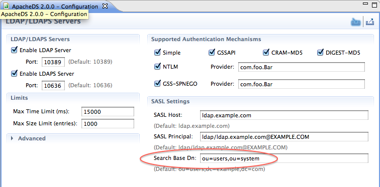

ApacheDS 2.0
Downloads
Documentation
- Basic User Guide
- Advanced User Guide
- Developer Guide
- Kerberos User Guide
- Configuration
- JavaDocs
- Cross-Reference
Support
Community
About Apache
4.1.2.3 - SASL DIGEST-MD5 Authentication
The DIGEST-MD5 SASL mechanism is defined by RFC 2829, which has been moved to an historic status by RFC 6331, due to its intrinsic weaknesses.
Usage
As for CRAM-MD5 mechanism, there is an exchange between the server and the client. First, the client sends a BindRequest with no credentials :
MessageType : BIND_REQUEST
Message ID : 1
BindRequest
Version : '3'
Name : 'null'
Sasl credentials
Mechanism :'DIGEST-MD5'
Credentials : null
The server responds with a BindResponses containing a challenge :
MessageType : BIND_RESPONSE
Message ID : 2
BindResponse
Ldap Result
Result code : (SUCCESS) success
Matched Dn : ''
Diagnostic message : ''
Server sasl credentials : '0x72 0x73 0x70 0x61 0x75 0x74 0x68 0x3D 0x37 0x36 0x32 0x64 0x30 0x37 0x32 0x32 0x37 0x64 0x39 0x32 0x33 0x63 0x38 0x38 0x38 0x32 0x64 0x35 0x65 0x63 0x34 0x38 0x30 0x37 0x66 0x36 0x66 0x33 0x34 0x65 '
The client then compute the credentials, which contains many informations, some of them being digested with the server’s provided data :
MessageType : BIND_REQUEST
Message ID : 2
BindRequest
Version : '3'
Name : 'null'
Sasl credentials
Mechanism :'DIGEST-MD5'
Credentials : (omitted-for-safety)
Here, the credentials content is encoded a a byte[], representing those data :
charset = utf-8
username = "hnelson"
realm = "example.com"
nonce = "XVss/yPp4ZToAItV2acf5jgCYU1ALDNoUzGSqJZA"
nc = 00000001
cnonce = "rQRG4H27HqvdjDVh1OhtrtYD88daWWdvfAj9XGl2"
digest-uri = "ldap/localhost"
maxbuf = 65536
response = ef 63 c3 b9 c3 76 7e e6 c8 4b eb e7 7b 6e d4 56,
qop = auth
One of the big difference with CRAM-MD5 is that we send a realm (example.com here), which must be configured on the server and on the client.
The authentication requires 3 pieces of information on the client side :
* the userName
* the realm
* the user password
Server configuration
There are a few parameters we need to configure on the server to allow this mechanism to work. First, we need to define the searchBaseDn, which describes where will the server look for entries having the UID attributeType. This is a part of the ldapServer configuration :

This parameter (ads_searchBaseDn attributeType) can be found on the following entry :
ads-serverId=ldapServer,ou=servers,ads-directoryServiceId=default,ou=config
You also have to configure the SaslRealms which is also contained into the same entry (ads_saslrealms attributeType)